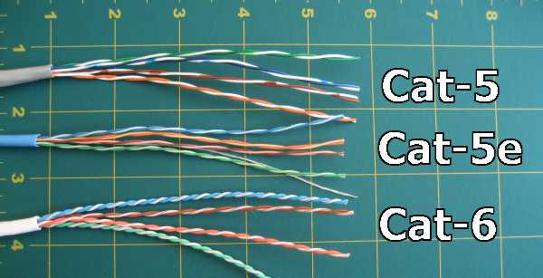
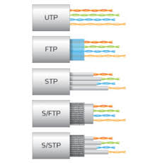

Un peu de théorie mais pas trop….
En entreprise comme à la maison , on aura tendance à vouloir tirer sur les prix, à grignoter le budget de ci de là…
Très mauvaise idée en réalité. Et nous allons voir pourquoi, et certains détails comptent.
La qualité de votre réseau tient a un ensemble de détails et de principe que l’on ne peut balayer d’un revers de la main.
Signalisation différentielle
Comment sont transmis les 1 et les 0
Ici cette notion est vulgariisée à l’extrême.
En substance , il faut comprendre qu’une tension excessivement faible circule dans les câbles réseaux, et qu’une variation de la tension créera soit un 1 ou un 0.
Les variations sont analysées par le récepteur pour déterminer le 1 et le 0.
Dans une transmission différentielle, une ligne (L+) transmet le signal, tandis que l’autre (L-) transmet l’inverse du signal, c’est-à-dire un niveau « 0 » quand l’autre est à « 1 », et réciproquement.
Le récepteur effectue la différence entre ces signaux. Si (L+ − L-) est supérieur à 1 V, c’est que le signal est « 1 ». Si (L+ − L-) est inférieur à −1 V, c’est que le signal est « 0 ».
C’est ridiculement faible, pourtant c’est de cette manière que vous recevez internet , mais pas seulement.
Les torsades
A l’époque vers 1920, les lignes téléphoniques avaient 1/4 de tour entre 2 poteaux afin de réduire les interférences, et augmenté la qualité du signal.
Ce tour, cet enroulement se nomme un pas. (comme le pas de vis..)
Les technologies de communication ont évoluées depuis, nous sommes plus nombreux, et nous voulons plus de services, plus d’informations circulent donc dans les paires de cuivre.
Voici à présent les différentes catégorie de câbles:

En plus des catégories, s’ajoute des classes .
Un câble RJ45 est constitué de 4 paires de files de cuivre torsadés.
Toutes torsadés avec un pas différent afin de réduire les interférences et la diaphonie.
La différence entre les 3 câbles est visible à l’oeil nu.
Comparaison entre catégorie 5 et 5e
Comprenez que le débis théorique maximal d’un câble Cat5e est inférieur au GigaBit/s.
De même , il vaut mieux envisager 80M que 100M .
| Cat 5 | Cat 5e | Cat 6 | |
|---|---|---|---|
| Fréquence | < 100 MHz | < 155 MHz | 250MHz |
| Débit | < 100 Mbit/s | < 1000 Mbit/s | 1 à10Gbit/s |
| Longueur | 100 M | 100 M | 100M |
En sommes vous avez réellement peu de chance d’ atteindre le Gbit/s de débit si vous basez uniquement votre projet sur le budget.
N’espérez pas non plus diffuser de la HD en réseau avec du Cat5 , même du Cat5e.
Pour cela il faut faudrait utiliser a du Cat6 grade 3TV/FFTP à 2200MHz, et cette fois blindée, sachant que d’ ordinaire le Cat6 n’est pas blindé.
De plus, il faut également les prises RJ45 Cat6, éventuellement blindées.
Le blindage
Ce n’est pas fini , aux différentes catégorie de câbles s’ajoutent également des dénominations supplémentaires comme le blindage:

- Paire torsadée non blindée : Unshielded twisted pair (UTP) - dénomination officielle U/UTP. La paire torsadée non blindée n’est entourée d’aucun blindage protecteur.
- Paire torsadée écrantée : Foiled twisted pair (FTP) - dénomination officielle F/UTP. L’ensemble des paires torsadées a un blindage global assuré par une feuille d’aluminium. L’écran est disposé entre la gaine extérieure et les 4 paires torsadées. Les paires torsadées ne sont pas individuellement blindées.
- Paire torsadée blindée : Shielded twisted pair (STP) - dénomination officielle U/FTP. Chaque paire torsadée blindée est entourée d’un feuillard en aluminium, de façon similaire à un câble coaxial.
- Paire torsadée doublement écrantée : Foiled foiled twisted pair (FFTP) - dénomination officielle F/FTP. Chaque paire torsadée est entourée d’une feuille de blindage en aluminium. L’ensemble des paires torsadées a une feuille de blindage collectif en aluminium.
- Paire torsadée écrantée et blindée : Shielded foiled twisted pair (SFTP) - dénomination officielle SF/UTP. Câble doté d’un double écran (feuille métallisée et tresse) commun à l’ensemble des paires. Les paires torsadées ne sont pas individuellement blindées (contrairement à ce que le terme Shielded foiled twisted pair pourrait faire croire).
- Paire torsadée super blindée : Super Shielded Twisted Pair (SSTP) - dénomination officielle S/FTP. Chacune des paires est blindée par un écran en aluminium, et en plus la gaine extérieure est blindée par une tresse en cuivre étamé.
Nous avons survolé quelques principes de base, pas forcément évidentes à appréhender, néanmoins ces concepts techniques régissent en partie la qualité de votre réseau, les ignorer conduira obligatoirement à un mauvais fonctionnement .
Ce travail est sous licence Attribution-NonCommercial 4.0
International.